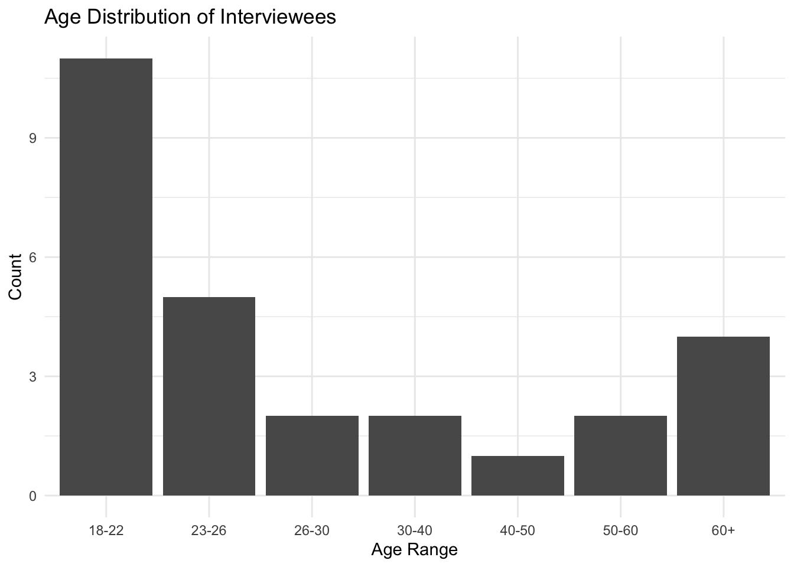
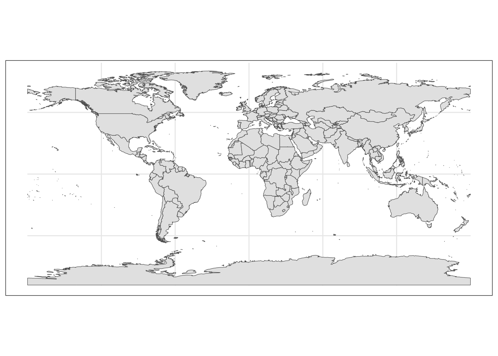

Portfolio 10 - Creating a Cross-Cultural Interviewee Demographics Presentation
Goal
As part of my TA duties for a Cross-Cultural Psychology course, I’ve been asked to compile all the demographic information from an assingment in which the students interviewed someone from a different culture and use the data to create interesting and informative visualizations for the class.
All the data for this project was contained on printed out and handwritten demographic forms. Part of this project was figuring out the best way to get that physical data into a dataframe in R.
The final product of this project was the output document which was shown to the students in class, displaying tables and visualizations for interviewees’ age, gender, occupation, academic majors, race/ethnicity, and birth country. Part II (Tables and Visualizations) of this document is close to what the final product looked like (except that, in the final product, all the code chunks were hidden; they are displayed here to show my work). However, the Visualizing Birth Countries section was the section that took the most work, so that section of this document documents the process of getting to the final plot which shows a world map with the birth countries of interviewees highlighted according to to how many interviewees were from that country.
Loading tidyverse
library(tidyverse)I. Creating the Dataset
All the data for the dataset is contained on printed out and handwritten demographic forms. I consulted Claude.ai to see how best to create the dataset. After considering the first option (Approach 1 below), I asked about more efficient ways to create the dataset, eventually landing on Approach 4.
Approach 1
First, create empty dataset.
interviewee_demographics <- tibble(
age = numeric(),
gender = factor(levels = c("Male", "Female")),
race = character(),
profession_or_major = character(),
birth_country = character(),
length_res = numeric(),
year_moved = numeric()
)Then, edit dataset to add rows for each observation.
interviewee_demographics <- interviewee_demographics %>%
add_row(
age = 33,
gender = "Female",
race = "Black or African American",
profession_or_major = "Professor",
birth_country = "Guyana",
length_res = 2,
year_moved = 2023
)Check dataset.
interviewee_demographics## # A tibble: 1 × 7
## age gender race profession_or_major birth_country length_res year_moved
## <dbl> <chr> <chr> <chr> <chr> <dbl> <dbl>
## 1 33 Female Black or… Professor Guyana 2 2023I then asked Claude if there a way more efficient method of data entry in R, saying that, if not, it would seem best to just create the dataset in Excel and then import it into R.
Claude agreed that using Excel would probably be best, but gave me two other options for quicker data entry in R.
Approach 2
This one doesn’t seem to work. Thanks Claude! I didn’t spend any time trying to figure out what Claude was shooting for and why this approach didn’t work because I was pretty sure I would end up creating the dataset in Excel.
# Create empty dataframe with your structure
interviewee_demographics <- tibble(
age = numeric(),
gender = character(),
race = character(),
profession_or_major = character(),
birth_country = character(),
length_res = numeric(),
year_moved = numeric()
)
# Then use this to open a data entry window
interviewee_demographics <- edit(interviewee_demographics)Approach 3
This approach is much better than the two approaches above because it allows me to type out the values of each variable row-by-row, similar to how I would in Excel—but I still think Excel is easier.
interviewee_demographics <- tribble(
~age, ~gender, ~race, ~profession_or_major, ~birth_country, ~length_res, ~year_moved,
25, "Female", "Asian", "Computer Science", "Japan", 7, 2018,
30, "Male", "Black", "Engineering", "Nigeria", 5, 2020,
# Add more rows as needed
)
interviewee_demographics## # A tibble: 2 × 7
## age gender race profession_or_major birth_country length_res year_moved
## <dbl> <chr> <chr> <chr> <chr> <dbl> <dbl>
## 1 25 Female Asian Computer Science Japan 7 2018
## 2 30 Male Black Engineering Nigeria 5 2020Approach 4
Here is the approach I ended up using. I created the dataset in Excel and imported it into R.
library(readxl)
interviewee_demographics <- read_excel("data/interviewee_demographics.xlsx")
interviewee_demographics## # A tibble: 27 × 9
## age gender race race2 major occupation birth_country length_res_years
## <dbl> <dbl> <dbl> <chr> <chr> <chr> <chr> <dbl>
## 1 33 2 3 <NA> <NA> professor Guyana 2
## 2 31 2 8 mixed <NA> professor South Africa 1.67
## 3 89 2 6 <NA> <NA> <NA> Italy NA
## 4 25 1 4 6 <NA> HES resea… Brazil 5
## 5 20 2 6 <NA> <NA> student Netherlands 2
## 6 28 2 3 <NA> communica… student Nigeria 1
## 7 57 1 6 <NA> <NA> retired -… England 28
## 8 51 NA 4 <NA> economics banking Colombia 27
## 9 22 2 4 6 economics student Brazil 4
## 10 20 2 6 <NA> engineeri… student South Africa 5
## # ℹ 17 more rows
## # ℹ 1 more variable: year_moved <dbl>II. Tables and Visualizations
Age
Grouped into Age Ranges
interviewee_demographics <- interviewee_demographics %>%
mutate(age_range = case_when(
age %in% c(18:22) ~ "18-22",
age %in% c(23:26) ~ "23-26",
age %in% c(26:30) ~ "26-30",
age %in% c(30:40) ~ "30-40",
age %in% c(40:50) ~ "40-50",
age %in% c(50:60) ~ "50-60",
age %in% c(61:90) ~ "60+"
))
interviewee_demographics %>%
count(age_range)## # A tibble: 7 × 2
## age_range n
## <chr> <int>
## 1 18-22 11
## 2 23-26 5
## 3 26-30 2
## 4 30-40 2
## 5 40-50 1
## 6 50-60 2
## 7 60+ 4# Define the order of age ranges
age_order <- c("18-22", "23-26", "26-30", "30-40", "40-50", "50-60", "60+")
# Plot with ordered factors
interviewee_demographics %>%
mutate(age_range = factor(age_range, levels = age_order)) %>%
ggplot(aes(x = age_range)) +
geom_bar() +
theme_minimal() +
labs(title = "Age Distribution of Interviewees",
x = "Age Range",
y = "Count")
All Values
interviewee_demographics %>%
count(age)## # A tibble: 20 × 2
## age n
## <dbl> <int>
## 1 18 1
## 2 19 2
## 3 20 3
## 4 21 3
## 5 22 2
## 6 23 2
## 7 24 1
## 8 25 1
## 9 26 1
## 10 28 1
## 11 29 1
## 12 31 1
## 13 33 1
## 14 46 1
## 15 51 1
## 16 57 1
## 17 61 1
## 18 71 1
## 19 88 1
## 20 89 1interviewee_demographics %>%
ggplot(aes(x = age)) +
geom_histogram(binwidth = 1) +
labs(title = "Ages of Interviewees") +
theme_minimal()Gender
NA = missing values
interviewee_demographics <- interviewee_demographics %>%
mutate(
gender = factor(gender,
levels = c(1, 2),
labels = c("male", "female")))
interviewee_demographics %>%
count(gender)## # A tibble: 3 × 2
## gender n
## <fct> <int>
## 1 male 9
## 2 female 17
## 3 <NA> 1interviewee_demographics %>%
ggplot(aes(x = gender)) +
geom_bar() +
theme_minimal()Occupation
interviewee_demographics %>%
count(occupation) %>%
arrange(desc(n))## # A tibble: 13 × 2
## occupation n
## <chr> <int>
## 1 student 14
## 2 professor 2
## 3 HES researcher 1
## 4 accountant 1
## 5 banking 1
## 6 business 1
## 7 clinical coordinator 1
## 8 electrical engineer 1
## 9 graduate student 1
## 10 housekeeping 1
## 11 retired - finance 1
## 12 shipping analyst 1
## 13 <NA> 1interviewee_demographics <- interviewee_demographics %>%
mutate(occupations = if_else(occupation == "student", "student", "other"))
interviewee_demographics %>%
ggplot(aes(x = occupations)) +
geom_bar() +
theme_minimal()
Students’ Majors
interviewee_demographics %>%
filter(occupation == "student") %>%
count(major)## # A tibble: 10 × 2
## major n
## <chr> <int>
## 1 HES 1
## 2 biology 1
## 3 business marketing 1
## 4 communications 1
## 5 computer science 1
## 6 economics 1
## 7 engineering 2
## 8 english 1
## 9 history 1
## 10 <NA> 4Race / Ethnicity
Other races included mixed, Turkish, and Middle Eastern. Two interviewees selected both Hispanic and White. One interviewee selected both Asian and Black or African American.
interviewee_demographics <- interviewee_demographics %>%
mutate(
race = factor(race,
levels = c(1:8),
labels = c("American Indian or Alaskan Native",
"Asian",
"Black or African American",
"Hispanic or Latino",
"Native Hawaiian or Other Pacific Islander",
"White",
"Prefer not to say",
"Other"))
)
interviewee_demographics %>%
count(race) %>%
arrange(desc(n))## # A tibble: 5 × 2
## race n
## <fct> <int>
## 1 Hispanic or Latino 10
## 2 White 9
## 3 Black or African American 3
## 4 Other 3
## 5 Asian 2Visualizing Birth Countries
The most interesting visualization will probably be to depict where on the world map the interviewees were born. I found and copied and pasted the code below from a Stack Overflow forum post titled “How to plot a world map using R” (link: https://stackoverflow.com/questions/69625716/how-to-plot-a-world-map-using-r).
library("ggplot2")
theme_set(theme_bw())
library("sf")## Linking to GEOS 3.13.0, GDAL 3.8.5, PROJ 9.5.1; sf_use_s2() is TRUElibrary("rnaturalearth")
library("rnaturalearthdata")##
## Attaching package: 'rnaturalearthdata'## The following object is masked from 'package:rnaturalearth':
##
## countries110world <- ne_countries(scale = "medium", returnclass = "sf")ggplot(data = world) +
geom_sf()
ggplot(data = world) +
geom_sf() +
xlab("Longitude") + ylab("Latitude") +
ggtitle("World map", subtitle = paste0("(", length(unique(world$NAME)), " countries)"))This demonstrates an example of how one might apply a fill based on one of the variables in the world dataset.
ggplot(data = world) +
geom_sf(aes(fill = pop_est)) +
scale_fill_viridis_c(option = "plasma", trans = "sqrt")This demonstrates an example of how one might apply a fill based on criteria external to the world dataset.
world <- ne_countries(scale = "medium", returnclass = "sf")
my_countries <- c("Aruba","Afghanistan", "Morocco", "Canada")
world_modified <- world %>%
mutate(my_selection = ifelse(admin %in% my_countries,
1, NA))
ggplot(data = world_modified) +
geom_sf(aes(fill=my_selection)) +
theme_bw()Claude helped me to adapt the code above for my goal of highlighting the countries contained in the birth countries of my dataset.
birth_countries <- unique(interviewee_demographics$birth_country)
world_modified <- world %>%
mutate(highlight = ifelse(admin %in% birth_countries, 1, NA))
ggplot(data = world_modified) +
geom_sf(aes(fill = highlight)) +
scale_fill_viridis_c(name = "Interviewees' Birth Countries",
na.value = "gray90") +
theme_bw() +
labs(title = "Birth Countries of Interviewees")I prefer this option because it shows counts. Claude provided this option as well.
# Count interviewees by country
country_counts <- interviewee_demographics %>%
count(birth_country)
# Join with world data
world_with_counts <- world %>%
left_join(country_counts, by = c("admin" = "birth_country"))
# Create map with count shading
ggplot(data = world_with_counts) +
geom_sf(aes(fill = n)) +
scale_fill_viridis_c(name = "Number of Interviewees",
na.value = "gray90") +
theme_bw() +
labs(title = "Interviewees by Birth Country")I asked Claude to do the fill a different way so that the legend was not a gradient and would correspond only to the actual count values in the dataset (1, 2, and 3). We achieved this by putting fill = factor(n) in the aesthetics for geom_sf.
library(viridis)## Loading required package: viridisLite# Create map with manual discrete color scale
ggplot(data = world_with_counts) +
geom_sf(aes(fill = factor(n))) + # Convert to factor here
scale_fill_manual(name = "Number of Interviewees",
values = viridis(3), # Get 3 colors from viridis
na.value = "gray90") +
theme_bw() +
labs(title = "Interviewees by Birth Country")Comparing the plot above to the original data.
interviewee_demographics %>%
count(birth_country) %>%
arrange(desc(n))## # A tibble: 19 × 2
## birth_country n
## <chr> <int>
## 1 Brazil 3
## 2 Colombia 3
## 3 Italy 2
## 4 Japan 2
## 5 Mexico 2
## 6 South Africa 2
## 7 Egypt 1
## 8 England 1
## 9 Eritrea 1
## 10 Germany 1
## 11 Greece 1
## 12 Guyana 1
## 13 Honduras 1
## 14 Iceland 1
## 15 India 1
## 16 Netherlands 1
## 17 Nigeria 1
## 18 Peru 1
## 19 Turkey 1Upon inspection, I notice that the country_counts dataframe (made from the interviewee_demographics data) was used to create the world_with_counts dataframe by matching the “admin” and “birth_country” columns. At least one of the names (England) doesn’t appear in the admin column of the world dataset. Checking to see where else this may have happened.
checking <- world_with_counts %>%
select(admin, n) %>%
arrange(desc(n))
print(checking, n = 19)## Simple feature collection with 242 features and 2 fields
## Geometry type: MULTIPOLYGON
## Dimension: XY
## Bounding box: xmin: -180 ymin: -89.99893 xmax: 180 ymax: 83.59961
## Geodetic CRS: WGS 84
## First 19 features:
## admin n geometry
## 1 Colombia 3 MULTIPOLYGON (((-71.31973 1...
## 2 Brazil 3 MULTIPOLYGON (((-66.87603 1...
## 3 South Africa 2 MULTIPOLYGON (((29.36484 -2...
## 4 Mexico 2 MULTIPOLYGON (((-117.1283 3...
## 5 Japan 2 MULTIPOLYGON (((133.3705 36...
## 6 Italy 2 MULTIPOLYGON (((7.021094 45...
## 7 Turkey 1 MULTIPOLYGON (((25.97002 40...
## 8 Peru 1 MULTIPOLYGON (((-69.96592 -...
## 9 Nigeria 1 MULTIPOLYGON (((7.300781 4....
## 10 Netherlands 1 MULTIPOLYGON (((5.993945 50...
## 11 India 1 MULTIPOLYGON (((68.16504 23...
## 12 Iceland 1 MULTIPOLYGON (((-15.54312 6...
## 13 Honduras 1 MULTIPOLYGON (((-83.15752 1...
## 14 Guyana 1 MULTIPOLYGON (((-60.74214 5...
## 15 Greece 1 MULTIPOLYGON (((27.86016 36...
## 16 Germany 1 MULTIPOLYGON (((9.524023 47...
## 17 Eritrea 1 MULTIPOLYGON (((36.52432 14...
## 18 Egypt 1 MULTIPOLYGON (((36.87139 21...
## 19 Zimbabwe NA MULTIPOLYGON (((31.28789 -2...Comparing this output to the output above, I’ve confirmed that England is the only one missing. In the admin column of the world dataset, there is no England, only United Kingdom. So, I’ll change this value of the interviewee_demographics dataset.
interviewee_demographics <- interviewee_demographics %>%
mutate(birth_country = if_else(birth_country == "England",
"United Kingdom",
birth_country))Now, I’ll recreate the world_with_counts dataframe with the updated country name by joining joining the world and country_counts dataframes, then replot.
country_counts <- interviewee_demographics %>%
count(birth_country)
world_with_counts <- world %>%
left_join(country_counts, by = c("admin" = "birth_country"))
ggplot(data = world_with_counts) +
geom_sf(aes(fill = factor(n))) + # Convert to factor here
scale_fill_manual(name = "Number of Interviewees",
values = viridis(3), # Get 3 colors from viridis
na.value = "gray90") +
theme_bw() +
labs(title = "Interviewees by Birth Country")Now, finally, here’s the code from the document that I submitted to the professor to show to the class that smooshes all the above steps into one and displays the world map plot together with country counts to make clear which countries are highlighted.
world <- ne_countries(scale = "medium", returnclass = "sf")
interviewee_demographics <- interviewee_demographics %>%
mutate(birth_country = if_else(birth_country == "England",
"United Kingdom",
birth_country))
country_counts <- interviewee_demographics %>%
count(birth_country)
world_with_counts <- world %>%
left_join(country_counts, by = c("admin" = "birth_country"))
interviewee_demographics %>%
count(birth_country) %>%
arrange(desc(n))## # A tibble: 19 × 2
## birth_country n
## <chr> <int>
## 1 Brazil 3
## 2 Colombia 3
## 3 Italy 2
## 4 Japan 2
## 5 Mexico 2
## 6 South Africa 2
## 7 Egypt 1
## 8 Eritrea 1
## 9 Germany 1
## 10 Greece 1
## 11 Guyana 1
## 12 Honduras 1
## 13 Iceland 1
## 14 India 1
## 15 Netherlands 1
## 16 Nigeria 1
## 17 Peru 1
## 18 Turkey 1
## 19 United Kingdom 1ggplot(data = world_with_counts) +
geom_sf(aes(fill = factor(n))) + # Convert to factor here
scale_fill_manual(name = "Number of Interviewees",
values = viridis(3), # Get 3 colors from viridis
na.value = "gray90") +
theme_bw() +
labs(title = "Interviewees' Birth Countries")[Note: I don’t know why there is so much empty white space at the bottom of this docuement.]